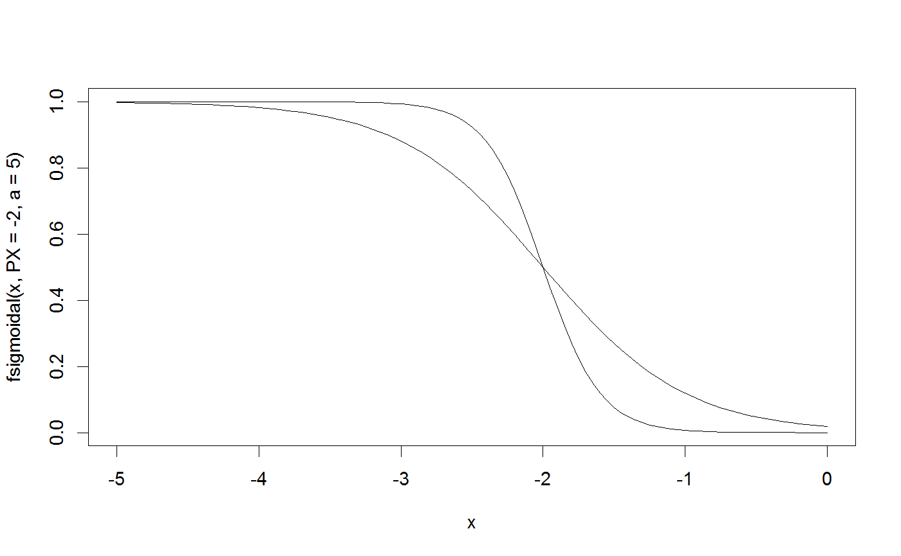
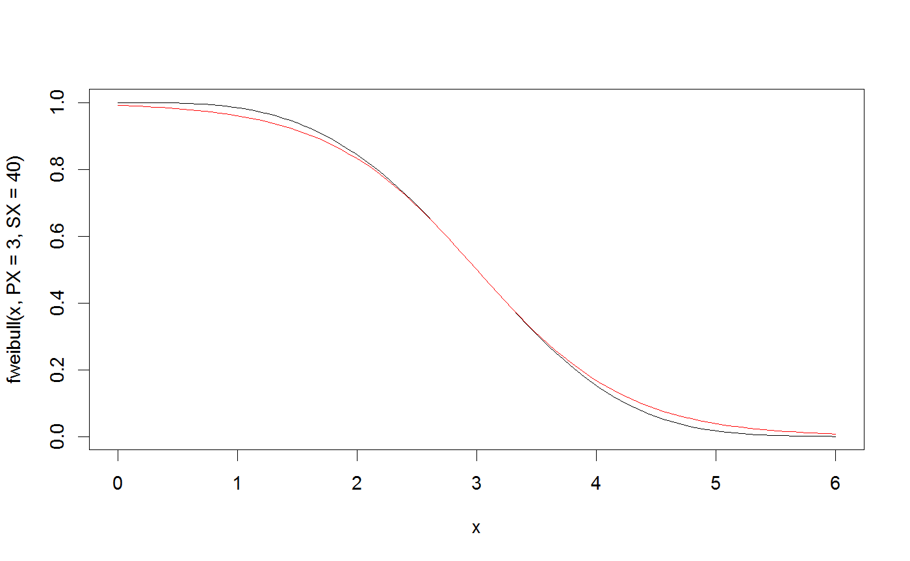

A sigmoidal-exponential function, which describes the relative conductivity as a function of the plant water potential. The relative conductivity is scaled to be 1 when water potential is zero. This function was used by Pammenter and vander Willigen (1998), but note that this implementation gives the relative conductivity, not the PLC (but relK = 1 - PLC). The slope of relK versus P at the inflection point can be calculated from the shape parameter (a) as slope = -a/4.
fsigmoidal(P, PX, a, X = 50)
| P | Water potential (positive-valued MPa) |
|---|---|
| PX | Water potential at X loss of conductivity (positive valued). |
| a | Shape parameter, related to the slope at the inflection point (see Description). |
| X | If 50, PX is the P50. |
Pammenter, N.W., Willigen, C.V. der, 1998. A mathematical and statistical analysis of the curves illustrating vulnerability of xylem to cavitation. Tree Physiol 18, 589-593. doi:10.1093/treephys/18.8-9.589
curve(fsigmoidal(x, PX=-2, a=5), from=0, to=-5)curve(fsigmoidal(x, PX=-2, a=2), add=TRUE)curve(fsigmoidal(x, PX=3, a=4*(40/100)), add=TRUE, col="red")